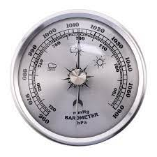

A barometer can be used to measure the pressure of a typhoon, A barometer is a scientific instrument used to measure atmospheric pressure, it measures atmospheric pressure in units of measurement called atmospheres or bars. An atmosphere (atm) is the unit of measurement equal to the average air pressure at sea level at a temperature of 15 degrees Celsius (59 degrees Fahrenheit).
An anemometer is used to measure wind speed and pressure, these can be used to study weather patterns and to tell i there is an upcoming typhoon.
A hygrometer is an instrument used in meteorological science to measure the humidity, or amount of water vapour in the air. Several major types of hygrometers are used to measure humidity.